2026年5月後半今回届いた回覧資料
学園前北地区開発プロジェクト（B工区）新築工事について
掲載日: 2026年5月31日 / 5月後半アーカイブ
場所奈良市鶴舞東町657番34（地番）の一部
建物概要共同住宅・地上7階建・292戸予定
予定工期2026年7月〜2028年8月
問い合わせ長谷工コーポレーション 開発推進2部
要点
- 学園前北地区開発プロジェクトB工区の新築工事に関する近隣向け案内です。
- 事業者は近鉄不動産株式会社・大林新星和不動産株式会社、施工者は株式会社長谷工コーポレーションの予定です。
- 工事車両の運行、騒音・塵埃対策、作業時間、テレビ電波障害対策などについて説明されています。
- 主な作業時間は午前8時30分〜午後6時です。仕上げ・化粧工事は午後8時までの予定が示されています。
- 資料には、工事車両運行経路図、工程表、総合仮設図、土地利用計画平面図も含まれています。
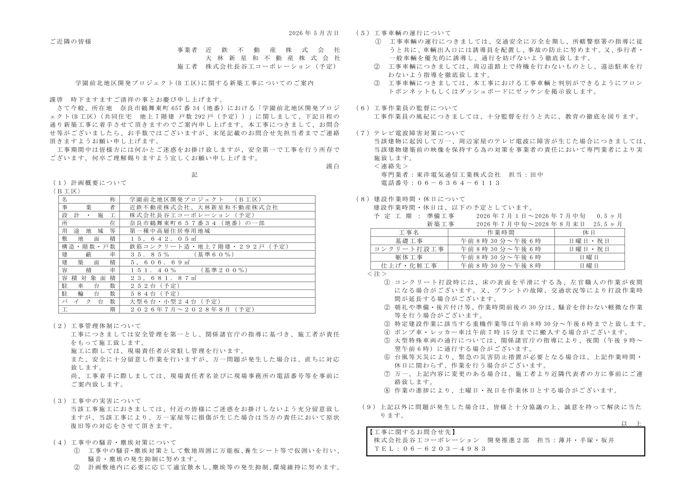
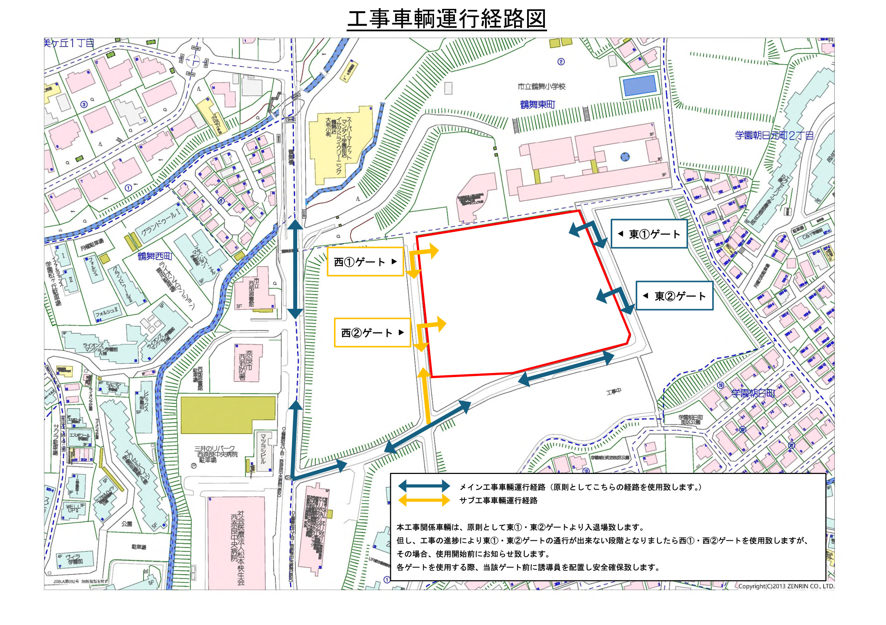
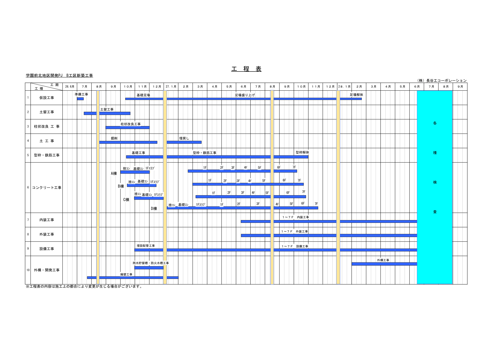
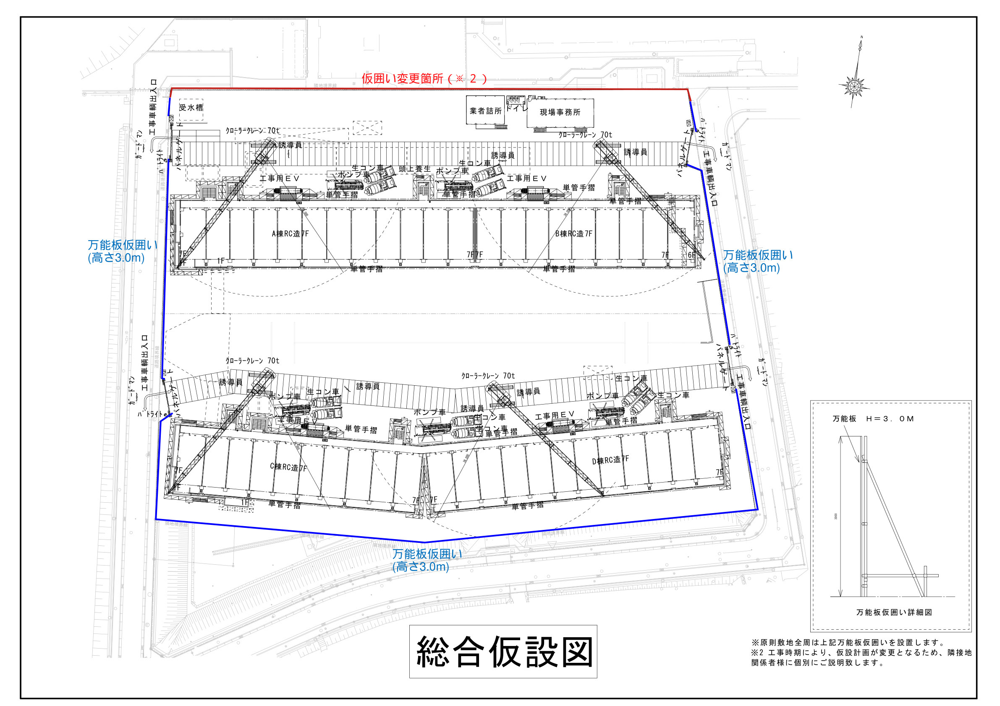
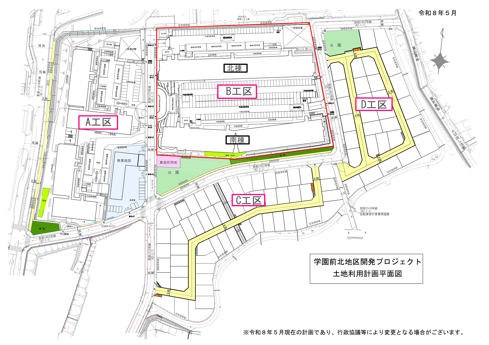
鶴舞社会福祉協議会活動 6月
掲載日: 2026年5月31日 / 5月後半アーカイブ
健康体操6月10日（水）13:00〜13:40
つるまい元気アップ6月3日・17日（水）13:00〜14:30
シャヴェール毎週水曜日 14:00〜15:00
モルック・ボッチャ金曜日 14:00〜15:30
要点
- 鶴舞社会福祉協議会の6月活動案内です。ふるって参加しましょう。
- はなうたは6月16日（第3火曜日）14:00〜15:00です。
- 麻雀は6月15日（第3月曜日）13:30〜16:30です。
- つるまいモルック・ボッチャは金曜日14:00〜15:30です。第1・第3は西町6・7棟、第2・第4は東広場です。
- 天候により、モルック・ボッチャは集会室に変わることがあります。
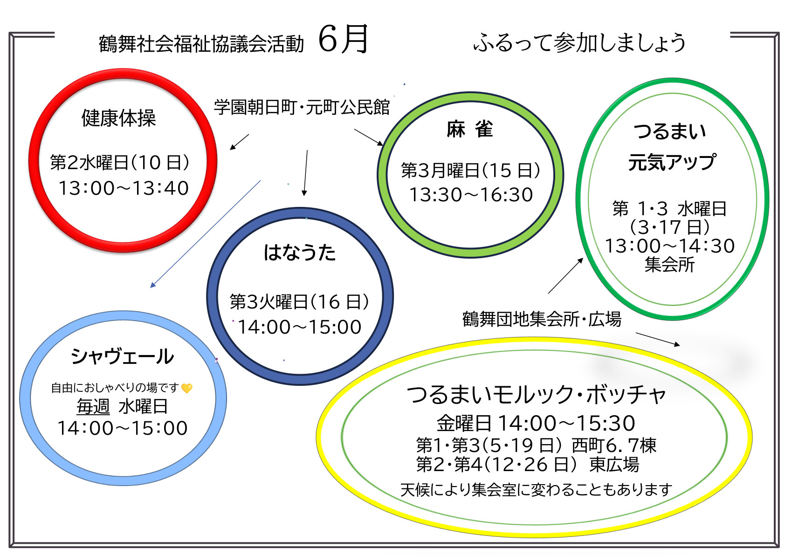
健康体操のお知らせ（笑顔になることの効果）
掲載日: 2026年5月31日 / 5月後半アーカイブ
今月のテーマ笑顔を大切に穏やかにすごす
次回6月10日（水）開催
次回テーマ梅雨時の健康管理
協力ケアセンターそれいゆ学園前
要点
- 笑いは、ストレス解消や免疫力向上に効果が期待できます。
- 笑うことで血管が拡張され、血圧を下げる効果があると紹介されています。
- 笑うと唾液の分泌量が増え、口腔機能の維持や誤嚥性肺炎の予防にもつながります。
- 大声で笑うと自然に腹式呼吸になり、血行を良くし、筋力維持にも役立ちます。
- 次回の健康体操は6月10日（水）開催予定です。多数の参加が呼びかけられています。
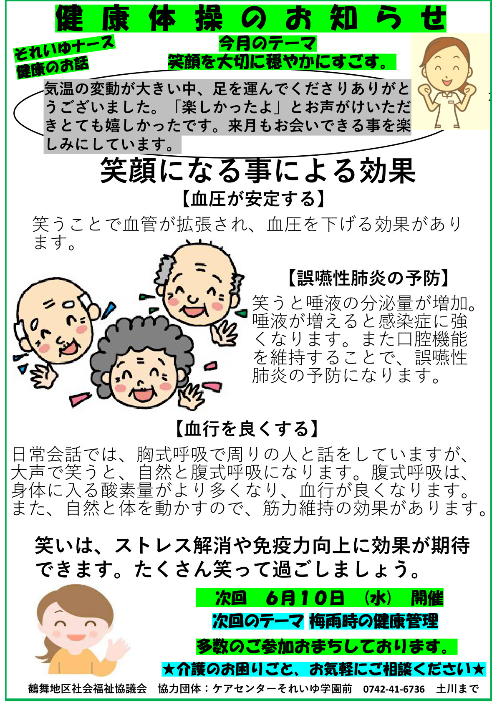
奈良市交通安全指導員の推薦について
掲載日: 2026年5月31日 / 5月後半アーカイブ
依頼元奈良市
内容交通安全指導員の推薦依頼
推薦依頼人数3名
提出期限2026年7月22日（水）
要点
- 奈良市から、交通安全指導員の推薦について依頼がありました。
- 現在委嘱されている交通安全指導員は、2026年9月30日で3年間の任期満了となります。
- 次期任期は、2026年10月1日から2029年9月30日までの3年間です。
- 推薦依頼人数は3名です。提出書類は推薦書・承諾書です。
- 添付資料として、設置規則、事務取扱要領、推薦書・承諾書、活動内容、委嘱の流れ、名簿などが案内されています。
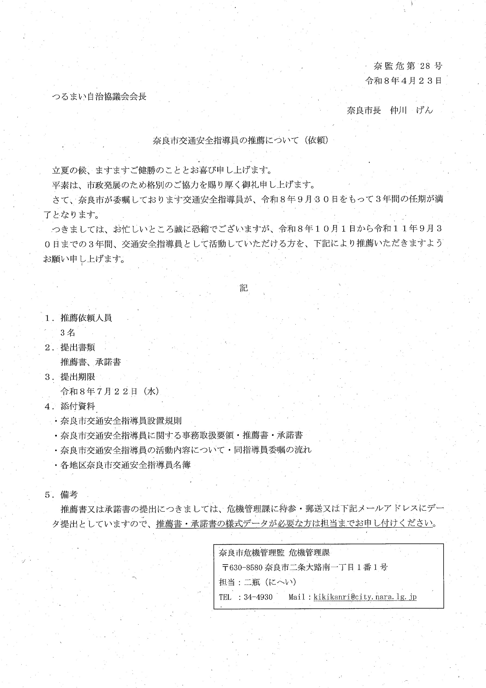
交通安全功労被表彰者の推薦について
掲載日: 2026年5月31日 / 5月後半アーカイブ
依頼元奈良市交通対策協議会
内容交通安全功労者の推薦依頼
提出期限2026年7月17日（金）
表彰予定2026年9月25日（金）の市民決起大会
要点
- 交通安全活動や交通事故防止に貢献している個人・団体の推薦依頼です。
- 該当する個人または団体がある場合、推薦書により提出します。
- 推薦は、各地区につき個人1名または1団体を上限とされています。
- 表彰は、2026年9月25日（金）開催予定の「秋の交通安全運動市民決起大会」で行われる予定です。
- 別紙として、被表彰者推薦書、表彰規程、表彰履歴などが案内されています。
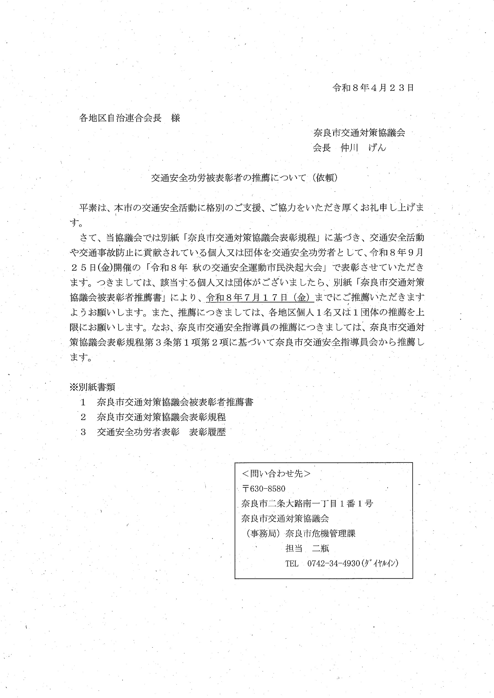
移動販売（6月）
掲載日: 2026年5月31日 / 5月後半アーカイブ
学園朝日町・元町公民館水曜日（3・10・17・24日）13:40〜14:10
鶴舞団地西町UR管理事務所付近月曜日（1・8・15・22・29日）15:40〜16:10
鶴舞団地西町UR管理事務所付近金曜日（5・12・19・26日）14:00〜14:30
主催鶴舞地区社会福祉協議会
要点
- 6月の移動販売スケジュールのお知らせです。
- 学園朝日町・元町公民館では、水曜日の13:40〜14:10に実施されます。
- 鶴舞団地西町UR管理事務所付近では、月曜日の15:40〜16:10、金曜日の14:00〜14:30に実施されます。
- 買い物支援として、地域のみなさんが利用できます。
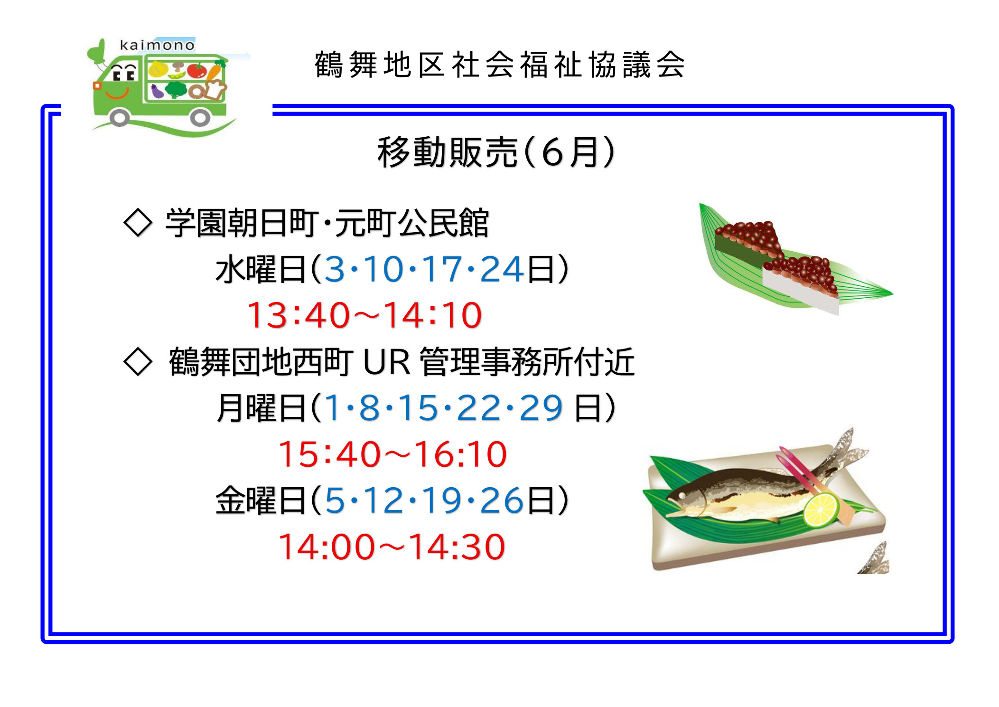
つむぎフェスタ
掲載日: 2026年5月31日 / 5月後半アーカイブ
開催日2026年6月21日（日）
時間10:00〜12:00
場所鶴舞小学校 校庭
主催つるまい地区自治協議会・鶴舞地区社会福祉協議会
要点
- 家族みなさんで楽しめる「つむぎフェスタ」の案内です。
- 新鮮なお野菜の販売や、食べ物、ゲームなどが案内されています。
- 会場は鶴舞小学校の校庭です。
- 開催時間は10:00〜12:00です。
資産調査名目の金塊詐欺に注意
掲載日: 2026年5月31日 / 5月後半アーカイブ
発行奈良県警察本部 生活安全企画課
発行日2026年5月29日
内容資産調査名目の金塊詐欺への注意喚起
合言葉警察官や公務員が金塊を預かることは絶対にありません
要点
- 郵便局員を名乗り「荷物から大麻や不正なカードが見つかった」などと不安をあおる電話に注意してください。
- 偽の警察官・検察官が「マネーロンダリングの容疑がある」「協力しないと逮捕する」などと脅す手口があります。
- LINEやビデオ通話で警察手帳・逮捕状を見せることはありません。SNSで見せられるものは偽物です。
- 「身の潔白を証明するため現金を金塊に替えて預ける必要がある」と言われても応じないでください。
- 警察官や公務員が金塊を預かったり、指定場所に置かせたりする手続きは存在しません。
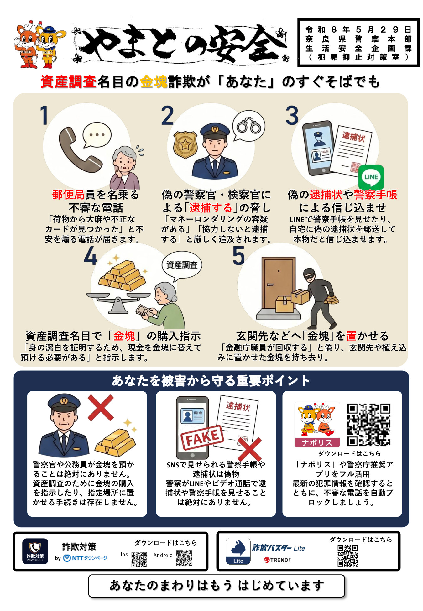
やまとの安全（令和7年中の奈良県内刑法犯認知件数・訂正版）
掲載日: 2026年5月31日 / 5月後半アーカイブ
発行奈良県警察本部 生活安全企画課
発行日2026年5月29日
県内刑法犯認知件数6,265件（前年比＋48件）
重点特殊詐欺・SNS型詐欺・空き巣・自転車盗への注意
要点
- 令和7年中の奈良県内刑法犯認知件数は6,265件で、前年より48件増加しています。
- 特殊詐欺は323件、被害額は約23億4,030万円です。サギ電話の多くは国際電話からと案内されています。
- SNS型投資・ロマンス詐欺は212件、被害額は約34億6,890万円です。「安全」「簡単」「高配当」などのもうけ話に注意してください。
- 住宅対象侵入窃盗は150件で、無施錠率は57％です。鍵かけの徹底と防犯設備の導入が呼びかけられています。
- 自転車盗は867件で、無施錠率は77％です。家でも外でも鍵をかけ、二重ロックを心がけましょう。
- 地域全体で取り組む「あいさつ・声かけ・鍵かけ運動 チャレンジ“絆”」への参加も呼びかけられています。
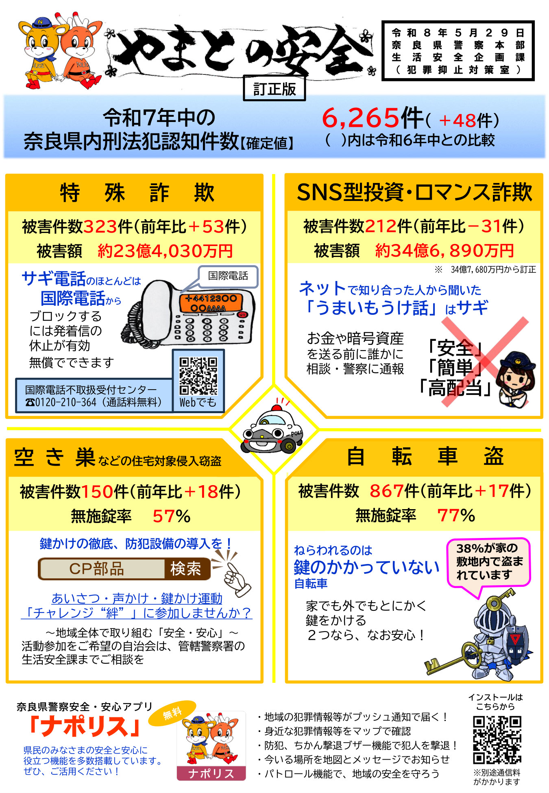
2026年5月前半5月前半に掲載した回覧資料
学園前移動支援
掲載日: 2026年5月16日 / 回覧板資料より作成
対象鶴舞地区内にお住まいの方
利用料1回100円
運航日月・水・金
運航時間9:00〜12:00 / 13:00〜16:00
要点
- 鶴舞地区のアンケートをもとに実現した移動支援です。
- 買い物・通院などの生活の足として、令和7年3月より運行されています。
- 事前予約制です。予約受付は午前9時〜11時です。
- 予約電話番号は 070-8526-6330 です。利用日・時間・行先を伝えてください。
- 不明点は「つるまい自治協議会」事務局 080-1426-0881 まで。
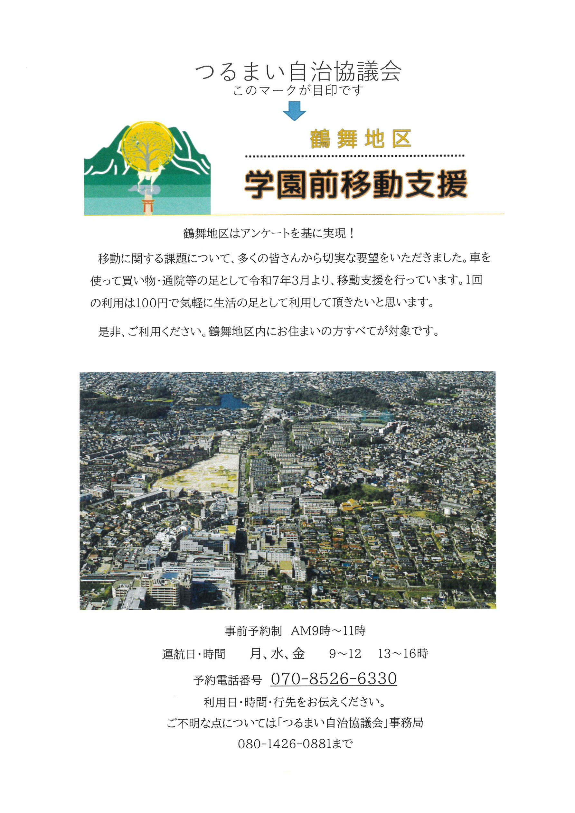
大規模地震時の電気火災対策
掲載日: 2026年5月16日 / 回覧板資料より作成
テーマ火災を防ぐための備え
重点地震による電気火災対策
有効策感震ブレーカーの設置
資料総務省消防庁の啓発資料
要点
- 大規模地震では、建物の倒壊だけでなく火災被害も多く発生します。
- 東日本大震災の火災では、原因が特定されたものの過半数が電気に起因していました。
- 電気火災対策には、震度5強相当の地震を感知して電気を自動で遮断する感震ブレーカーが効果的です。
- 感震ブレーカーには、分電盤タイプ（内蔵型・後付型）、コンセントタイプ、簡易タイプがあります。
- 設置方法によっては電気工事が必要です。家庭の状況に合わせて検討しましょう。
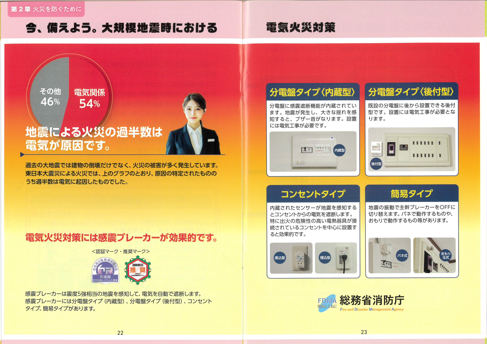
奈良市のごみを考える市民説明会
掲載日: 2026年5月16日 / 回覧板資料より作成
開催日令和8年5月24日（日）
時間10:00〜12:00（開場 9:30）
場所奈良市役所 中央棟6階 正庁
参加費無料・申込不要
要点
- 奈良市の重要課題である新クリーンセンター建設計画についての市民説明会です。
- 20年以上にわたり候補地の検討を続けている課題について、市と市民が今後の展望を話し合います。
- 内容は「奈良市のクリーンセンター建設の取組について」の説明と、奈良市と市民の意見交換です。
- 駐車場台数に限りがあるため、できるだけ公共交通機関の利用が案内されています。
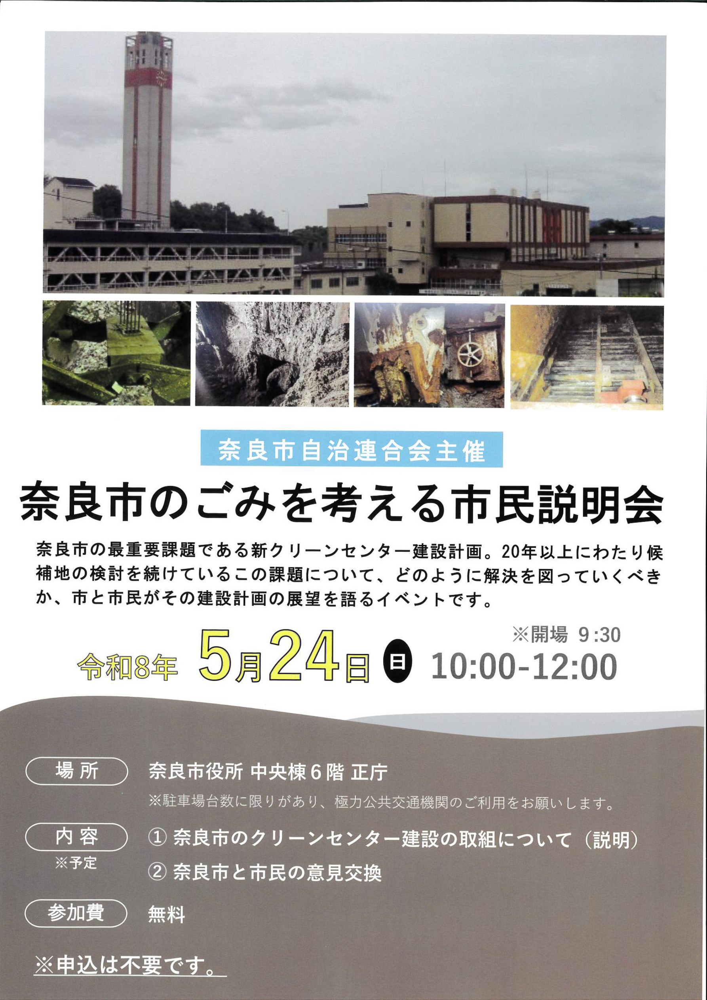
健康体操のお知らせ
掲載日: 2026年5月16日 / 回覧板資料より作成
テーマ気温の変動を乗り越える身体づくり
内容室内でできる軽い運動の紹介
協力ケアセンターそれいゆ学園前
関連5月の社協活動案内も掲載
要点
- 寒暖差対策には、生活習慣を意識することが大切です。
- 水分補給、栄養バランスのよい食事、適度な運動を心がけましょう。
- グーパー運動は、手を前に伸ばしてグー・パーを交互に繰り返す運動です。握力維持や関節を動かす効果が期待できます。
- 椅子に座った足踏み、簡単な筋トレ、首や肩のストレッチも紹介されています。
- 5月の社協活動案内として、健康体操、つるまい元気アップ、つるまいモルック・ボッチャ等の案内も掲載されています。
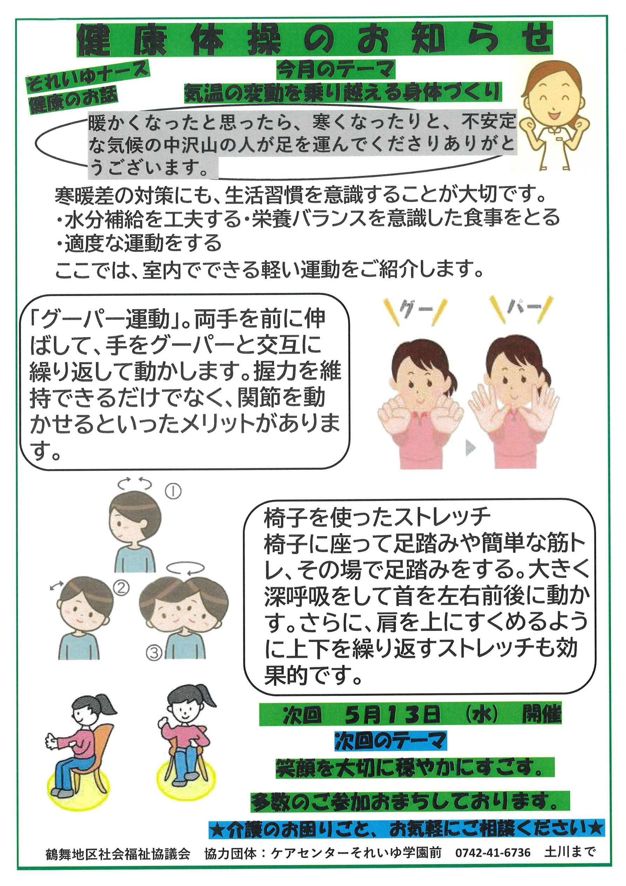
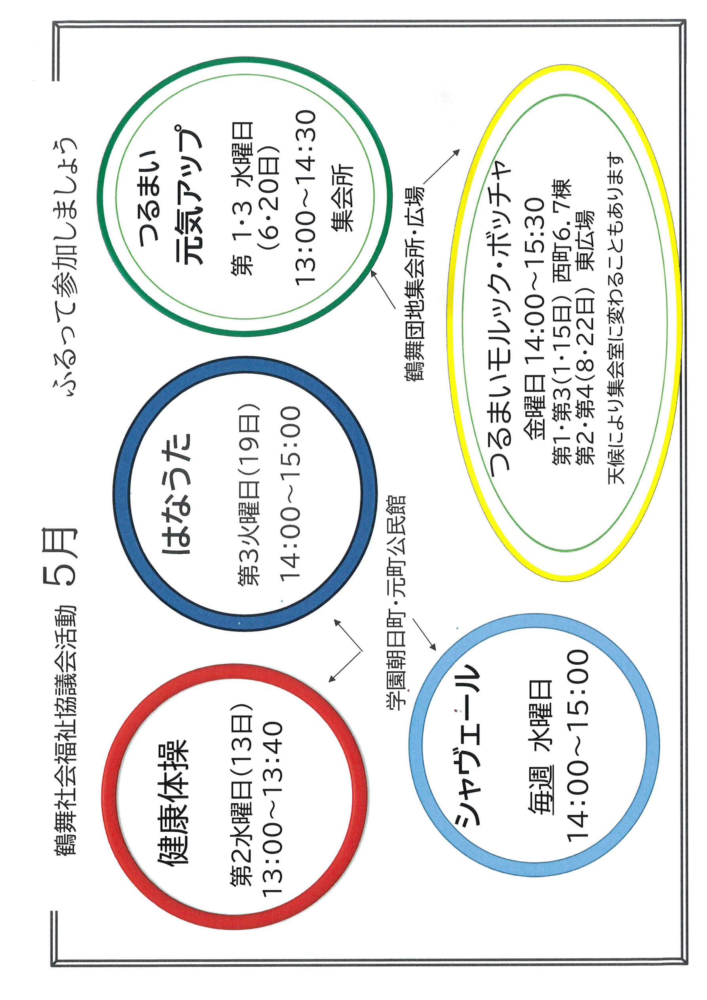
白玉団子作り
掲載日: 2026年5月16日 / 回覧板資料より作成
開催日5月20日（水）
時間14:00〜
場所学園朝日町・元町公民館
主催つるまい自治協議会、鶴舞地区社会福祉協議会
要点
- みなさんで白玉団子を作って、楽しく食べる集まりです。
- 参加される方は、エプロンを持参してください。
- 会場は学園朝日町・元町公民館です。
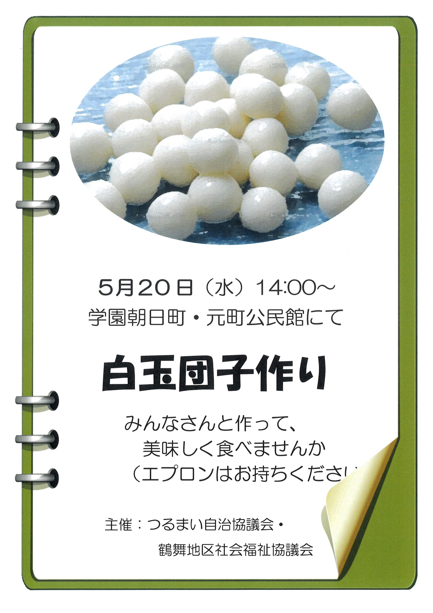
麻雀を楽しもう
掲載日: 2026年5月16日 / 回覧板資料より作成
開催日5月18日（月）
時間13:30〜17:30
場所学園朝日町・元町公民館
主催つるまい自治協議会、鶴舞地区社会福祉協議会
要点
- 地域のみなさんで麻雀を楽しむ集まりです。
- 賭け事はしません。楽しく頭の体操をすることが目的です。
- 人数が多いときは、順番に行います。
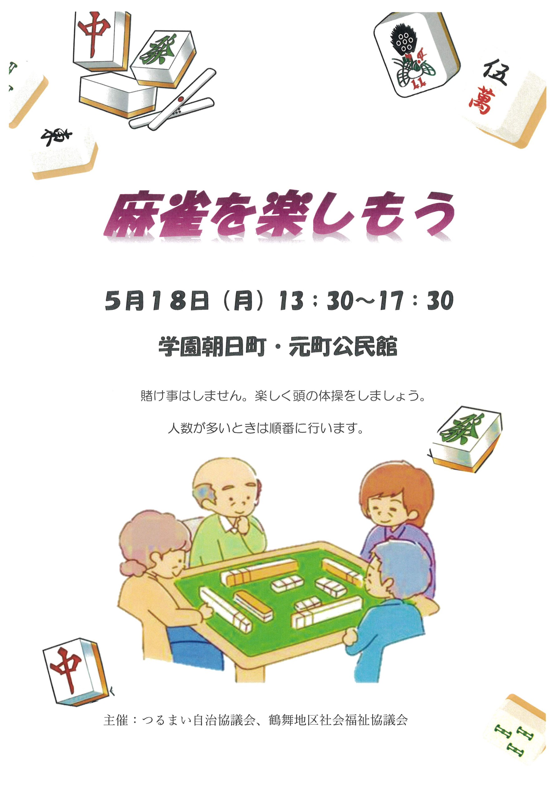
以前の掲載分2026年4月以前に掲載した回覧資料
鶴舞橋耐震補強工事のお知らせ
掲載日: 2026年3月31日 / 新着情報の画像付き告知を回覧板要約へ移動
工事名鶴舞橋耐震補強工事
場所奈良市鶴舞東町（鶴舞橋の橋脚部分）
工期2025年3月6日〜2026年6月4日（延長予定）
施工者株式会社 森本組
要点
- 工事期間が2026年6月4日まで延長予定となっています。
- 鶴舞橋橋梁下の西行道路は、5月中を目途に開放予定です。
- 詳しい開放日時は、現地看板で別途案内されます。
- 東側側道通行止めは、本工事完了後の長寿命修繕工事期間中も継続予定です。

移動販売スケジュール（4月）
掲載日: 2026年4月1日 / 新着情報の画像付き告知を回覧板要約へ移動
学園朝日町・元町公民館水曜日 13:40〜14:10
鶴舞団地西町 UR管理事務所付近月曜日 15:40〜16:10
鶴舞団地西町 UR管理事務所付近金曜日 14:00〜14:30
主催鶴舞地区社会福祉協議会
要点
- 4月の移動販売スケジュールのお知らせです。
- 学園朝日町・元町公民館は、水曜日に実施されます。
- 鶴舞団地西町 UR管理事務所付近は、月曜日と金曜日に実施されます。

自転車 交通反則通告制度・反則金一覧
掲載日: 2026年4月1日 / 新着情報の画像付き告知を回覧板要約へ移動
開始令和8年4月1日
対象16歳以上
内容自転車の交通違反に交通反則通告制度が導入
資料奈良市交通対策協議会
要点
- 走行中のスマホ操作、イヤホン等の使用、右側通行・逆走などが紹介されています。
- 信号無視、警報機が鳴っている踏切への立ち入り、一時不停止、二人乗りなども反則金の対象例として掲載されています。
- 自転車は軽車両です。車両の左側を走行し、安全確認を心がけましょう。

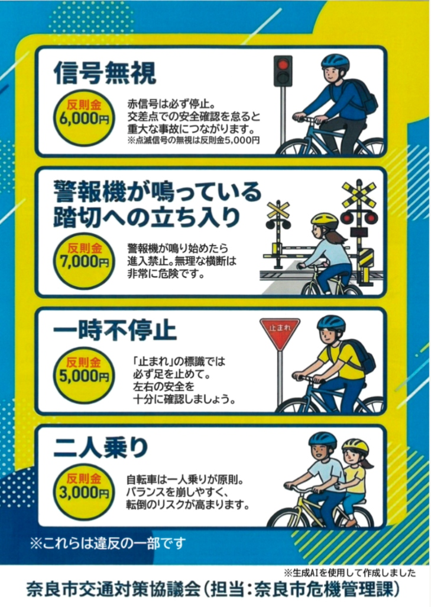
健康体操のお知らせ（春のおすすめ）
掲載日: 2026年4月8日 / 新着情報の画像付き告知を回覧板要約へ移動
今月のテーマ春のおすすめ、身体を動かそう
内容腰を捻るストレッチ、ウォーキング
次回4月8日（水）開催
協力ケアセンターそれいゆ学園前
要点
- 春の暖かい気候は体のこわばりが緩和され、運動しやすくなります。
- 軽い運動やストレッチで身体を動かしましょう。
- 腰を捻るストレッチは、筋肉の柔軟性を高め、姿勢の改善や呼吸機能の維持・向上に効果が期待できます。
- ウォーキングでは、背筋を伸ばし、猫背や反りすぎに注意しましょう。

やまとの安全（令和8年4月15日号）
掲載日: 2026年4月24日 / 防災防犯部会の安全情報を回覧板要約にも掲載
発行奈良西警察署
区分防災防犯部会の安全情報
資料やまとの安全 令和8年4月15日号
掲載方針発行の都度、回覧板要約にも掲載
要点
- 警察官が反則告知の際に、現場で反則金を受け取ることはありません。
- 不審な請求や現金の要求があった場合は、すぐに警察へ相談してください。
- 防犯・安全情報は、防災防犯部会ページにもまとめて掲載します。
やまとの安全（令和8年4月7日号）
掲載日: 2026年4月24日 / 防災防犯部会の安全情報を回覧板要約にも掲載
発行奈良西警察署
区分防災防犯部会の安全情報
資料やまとの安全 令和8年4月7日号
掲載方針発行の都度、回覧板要約にも掲載
要点
- 奈良西警察署から届いた地域の防犯・安全情報です。
- 地域の安全に関わる注意事項として、防災防犯部会ページに格納します。
- 回覧板要約ページでも、住民が見つけやすいように掲載します。